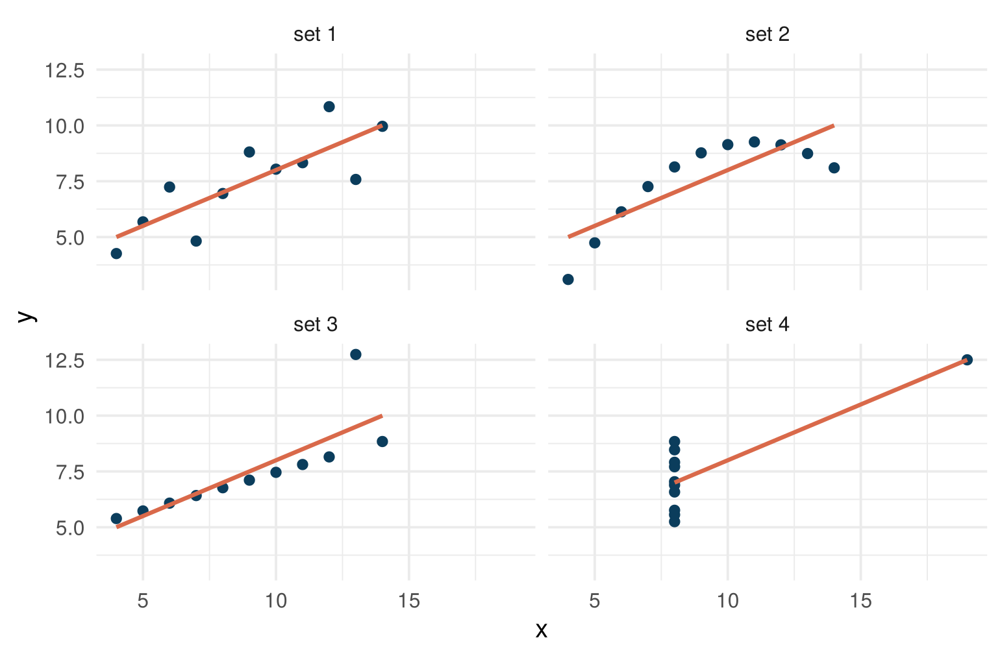
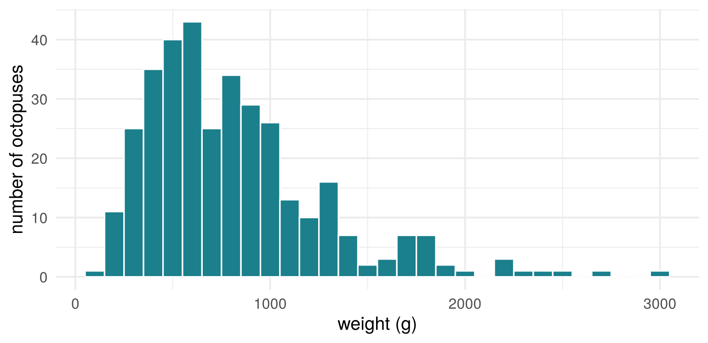
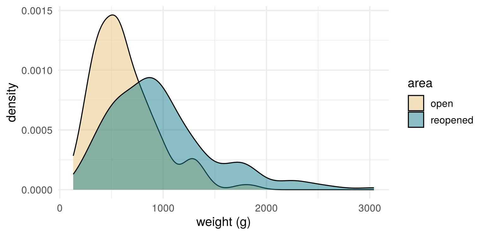
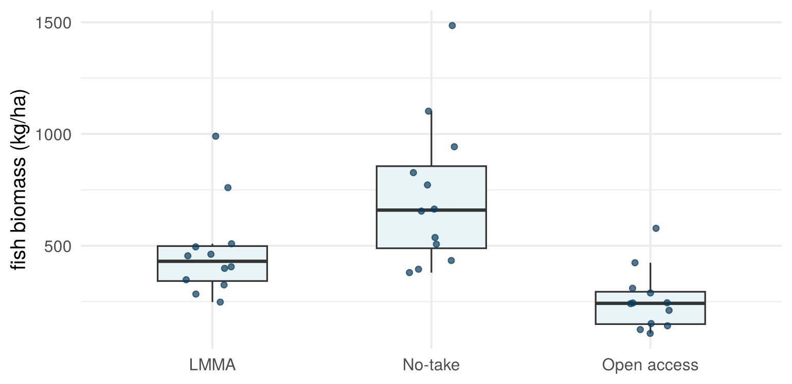
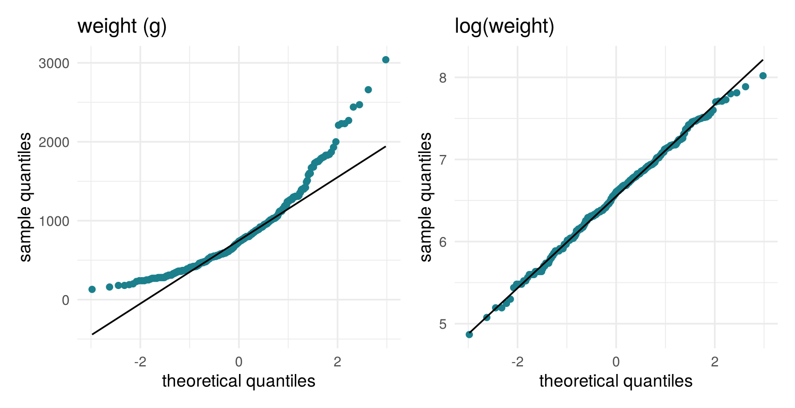
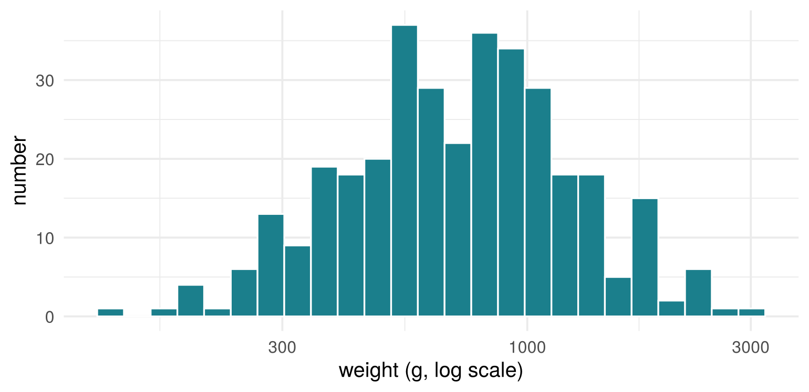
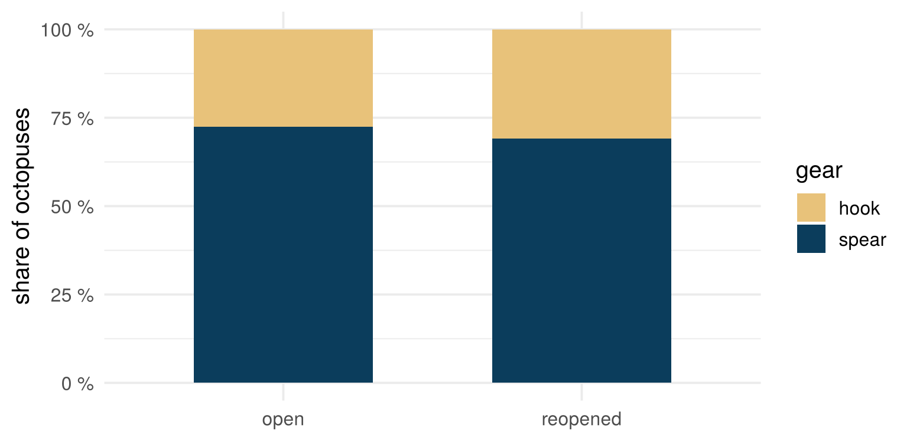

In 1973 the statistician Frank Anscombe built four small datasets
that have the same means, the same standard deviations and the
same correlation — and look completely different. They are in R
as anscombe.
En 1973, le statisticien Frank Anscombe a construit quatre petits
jeux de données qui ont les mêmes moyennes, les mêmes
écarts-types et la même corrélation — et qui sont complètement
différents. Ils sont dans R sous le nom anscombe.
#> x1 x2 x3 x4 y1 y2 y3 y4
#> 9.000000 9.000000 9.000000 9.000000 7.500909 7.500909 7.500000 7.500909round(c(cor(anscombe$x1, anscombe$y1), cor(anscombe$x2, anscombe$y2),
cor(anscombe$x3, anscombe$y3), cor(anscombe$x4, anscombe$y4)), 3)#> [1] 0.816 0.816 0.816 0.817# long format: one row per point, with its set number (1 to 4)
ans <- data.frame(set = rep(paste("set", 1:4), each = 11),
x = c(anscombe$x1, anscombe$x2, anscombe$x3, anscombe$x4),
y = c(anscombe$y1, anscombe$y2, anscombe$y3, anscombe$y4))
ggplot(ans, aes(x, y)) + geom_point(colour = "#0b3d5c", size = 2) +
geom_smooth(method = "lm", se = FALSE, colour = "#d9694a", formula = y ~ x) +
facet_wrap(~ set) + theme_c()
Functions and arguments used here
| Function / argument | What it does | Value it expects |
|---|---|---|
cor(x, y) |
correlation coefficient (Session 10) | two numeric vectors |
geom_smooth(method = "lm", se, formula) |
adds a straight fitted line (linear model, Session 10);
se = FALSE hides the confidence band |
|
facet_wrap(~ var) |
one small panel per value of var |
a formula ~ column |
Fonctions et arguments utilisés ici
| Fonction / argument | Ce qu’il fait | Valeur attendue |
|---|---|---|
cor(x, y) |
coefficient de corrélation (séance 10) | deux vecteurs numériques |
geom_smooth(method = "lm", se, formula) |
ajoute une droite ajustée (modèle linéaire, séance 10) ;
se = FALSE cache la bande de confiance |
|
facet_wrap(~ var) |
un petit panneau par valeur de var |
une formule ~ colonne |
Set 1 is a reasonable straight-line relationship; set 2 is a curve; set 3 is a perfect line spoiled by one outlier; in set 4 one single point creates the whole “correlation”. The numbers alone cannot tell them apart. Every analysis in this course starts with a graph.
Le jeu 1 est une relation linéaire raisonnable ; le jeu 2 est une courbe ; le jeu 3 est une droite parfaite gâchée par une valeur extrême ; dans le jeu 4 un seul point crée toute la « corrélation ». Les chiffres seuls ne peuvent pas les distinguer. Chaque analyse de ce cours commence par un graphique.
Octopus landings (octopus_catch.csv,
simulated). On 14 March 2026, a 3-month temporary
closure of an octopus fishing area ended. That day, trained community
data collectors weighed (spring balance, to the nearest 10 g) and sexed
every octopus landed in two villages:
Tsifota, whose fishers fished in the area that had just
reopened, and Andrevo, whose fishers
fished in open areas only. They also noted the gear
(spear or hook) and the sex of the fisher. One row = one
octopus (345 octopuses).
Débarquements de pieuvres
(octopus_catch.csv, simulé). Le 14 mars
2026, une fermeture temporaire de 3 mois d’une zone de pêche au
poulpe a pris fin. Ce jour-là, des collecteurs communautaires formés ont
pesé (peson, à 10 g près) et sexé chaque pieuvre
débarquée dans deux villages : Tsifota, dont
les pêcheurs ont pêché dans la zone qui venait d’être
rouverte, et Andrevo, dont les
pêcheurs ont pêché dans des zones ouvertes uniquement.
Ils ont aussi noté l’engin (harpon ou crochet) et le sexe du pêcheur.
Une ligne = une pieuvre (345 pieuvres).
#> 'data.frame': 345 obs. of 7 variables:
#> $ octopus_id: chr "O001" "O002" "O003" "O004" ...
#> $ village : chr "Tsifota" "Tsifota" "Tsifota" "Tsifota" ...
#> $ area : chr "reopened" "reopened" "reopened" "reopened" ...
#> $ weight_g : int 430 1300 550 590 930 720 590 880 1200 330 ...
#> $ sex : chr "F" "M" "F" "M" ...
#> $ gear : chr "spear" "hook" "hook" "hook" ...
#> $ fisher_sex: chr "M" "M" "M" "F" ...A histogram cuts the range into intervals (bins) and counts the values in each. The width of the bins changes the picture: too wide hides the shape, too narrow shows noise. Try two or three widths.
Un histogramme découpe l’étendue en intervalles (classes) et compte les valeurs dans chacun. La largeur des classes change l’image : trop larges cachent la forme, trop étroites montrent du bruit. Essayez deux ou trois largeurs.
ggplot(oc, aes(weight_g)) +
geom_histogram(binwidth = 100, fill = "#1b7f8c", colour = "white") +
labs(x = "weight (g)", y = "number of octopuses") + theme_c()
Functions and arguments used here
| Function / argument | What it does | Value it expects |
|---|---|---|
geom_histogram(binwidth, bins, boundary) |
histogram of one numeric variable (aes(x)) |
|
binwidth |
width of each bin, in the units of x | a number |
bins |
or: the number of bins (default 30); give binwidth
or bins |
a whole number |
boundary |
where a bin starts (e.g. 0): bins then cover 0–100,
100–200… |
a number |
Fonctions et arguments utilisés ici
| Fonction / argument | Ce qu’il fait | Valeur attendue |
|---|---|---|
geom_histogram(binwidth, bins, boundary) |
histogramme d’une variable numérique (aes(x)) |
|
binwidth |
largeur de chaque classe, dans les unités de x | un nombre |
bins |
ou : le nombre de classes (défaut 30) ; donnez binwidth
ou bins |
un entier |
boundary |
où commence une classe (ex. 0) : les classes couvrent
alors 0–100, 100–200… |
un nombre |
The distribution is right-skewed: most octopuses weigh 400–1,000 g, and a long tail goes up to 3 kg. Weights, lengths of large animals, abundances, incomes are often like this, because they result from multiplicative processes (growth is a percentage of the current size).
A density curve is a smoothed histogram; its area is 1. It is convenient to compare groups on one graph:
La distribution est asymétrique à droite : la plupart des pieuvres pèsent 400–1 000 g, et une longue queue monte jusqu’à 3 kg. Les poids, les tailles des grands animaux, les abondances, les revenus sont souvent ainsi, parce qu’ils résultent de processus multiplicatifs (la croissance est un pourcentage de la taille actuelle).
Une courbe de densité est un histogramme lissé ; son aire vaut 1. Elle est pratique pour comparer des groupes sur un seul graphique :
ggplot(oc, aes(weight_g, fill = area)) +
geom_density(alpha = 0.5) +
scale_fill_manual(values = c(open = "#e8c27a", reopened = "#1b7f8c")) +
labs(x = "weight (g)", y = "density") + theme_c()
Functions and arguments used here
| Function / argument | What it does | Value it expects |
|---|---|---|
geom_density(alpha, adjust) |
smoothed distribution; alpha = transparency;
adjust > 1 smooths more, < 1 less |
|
scale_fill_manual(values) |
chooses the fill colour of each group | a named vector c(group = "colour") |
Fonctions et arguments utilisés ici
| Fonction / argument | Ce qu’il fait | Valeur attendue |
|---|---|---|
geom_density(alpha, adjust) |
distribution lissée ; alpha = transparence ;
adjust > 1 lisse plus, < 1 moins |
|
scale_fill_manual(values) |
choisit la couleur de remplissage de chaque groupe | un vecteur nommé c(groupe = "couleur") |
A boxplot summarises 5 numbers; it hides the number of
points and shapes such as two peaks. With fewer than ~50 points
per group, add the raw points
(geom_jitter() spreads them sideways so they do not
overlap).
Une boîte à moustaches résume 5 nombres ; elle cache le
nombre de points et des formes comme deux pics. Avec
moins de ~50 points par groupe, ajoutez les points
bruts (geom_jitter() les écarte sur le côté pour
qu’ils ne se superposent pas).
ggplot(rf, aes(management, biomass_kg_ha)) +
geom_boxplot(outlier.shape = NA, width = 0.5, fill = "#e9f4f6") +
geom_jitter(width = 0.12, height = 0, colour = "#0b3d5c", alpha = 0.7) +
labs(x = NULL, y = "fish biomass (kg/ha)") + theme_c()
Functions and arguments used here
| Function / argument | What it does | Value it expects |
|---|---|---|
outlier.shape = NA (in
geom_boxplot()) |
does not draw the outliers of the box, because
geom_jitter() already draws every point (otherwise they
appear twice) |
|
geom_jitter(width, height) |
points moved randomly a little: sideways by up to
width, vertically by height (keep
0 so values are not changed) |
numbers |
Fonctions et arguments utilisés ici
| Fonction / argument | Ce qu’il fait | Valeur attendue |
|---|---|---|
outlier.shape = NA (in
geom_boxplot()) |
ne dessine pas les valeurs extrêmes de la boîte, car
geom_jitter() dessine déjà chaque point (sinon ils
apparaissent deux fois) |
|
geom_jitter(width, height) |
points déplacés un peu au hasard : sur le côté jusqu’à
width, verticalement de height (gardez
0 pour ne pas modifier les valeurs) |
des nombres |
Many tests of Sessions 5–10 assume that data (or model residuals) are roughly normal — the symmetric bell curve of Session 4. A normal QQ plot compares the sorted data with the values a normal distribution would give: if the data are normal, the points fall on a straight line.
Beaucoup de tests des séances 5–10 supposent que les données (ou les résidus d’un modèle) sont à peu près normales — la courbe en cloche symétrique de la séance 4. Un QQ plot normal compare les données triées aux valeurs que donnerait une loi normale : si les données sont normales, les points tombent sur une droite.
library(patchwork) # optional: places two ggplots side by side with "+"
p1 <- ggplot(oc, aes(sample = weight_g)) + stat_qq(colour = "#1b7f8c") + stat_qq_line() +
labs(title = "weight (g)", x = "theoretical quantiles", y = "sample quantiles") + theme_c(11)
p2 <- ggplot(oc, aes(sample = log(weight_g))) + stat_qq(colour = "#1b7f8c") + stat_qq_line() +
labs(title = "log(weight)", x = "theoretical quantiles", y = "sample quantiles") + theme_c(11)
p1 + p2
Functions and arguments used here
| Function / argument | What it does | Value it expects |
|---|---|---|
aes(sample = x) |
for QQ plots, the variable goes in sample, not in
x |
|
stat_qq(), stat_qq_line() |
the points of the QQ plot, and the reference line through Q1 and Q3 | |
p1 + p2 |
with the patchwork package: two plots side by side
(p1 / p2 = one above the other) |
|
qqnorm(x); qqline(x) |
the same in base R, without ggplot2 | a numeric vector |
Fonctions et arguments utilisés ici
| Fonction / argument | Ce qu’il fait | Valeur attendue |
|---|---|---|
aes(sample = x) |
pour les QQ plots, la variable va dans sample, pas dans
x |
|
stat_qq(), stat_qq_line() |
les points du QQ plot, et la droite de référence passant par Q1 et Q3 | |
p1 + p2 |
avec le package patchwork : deux graphiques côte à
côte (p1 / p2 = l’un au-dessus de l’autre) |
|
qqnorm(x); qqline(x) |
la même chose en R de base, sans ggplot2 | un vecteur numérique |
The raw weights bend upwards (right skew); the log
of the weights follows the line well. Session 4 explains why (the
log-normal distribution). You may meet the Shapiro–Wilk test
(shapiro.test()) to “test normality”: use it with care —
with large samples it rejects normality for tiny, harmless departures,
with small samples it misses big ones. The QQ plot and your
knowledge of the variable are more informative.
Les poids bruts se courbent vers le haut (asymétrie à droite) ; le
log des poids suit bien la droite. La séance 4 explique
pourquoi (la loi log-normale). Vous rencontrerez le test de
Shapiro–Wilk (shapiro.test()) pour « tester la normalité »
: utilisez-le avec prudence — avec de grands échantillons il rejette la
normalité pour des écarts minimes et sans conséquence, avec de petits
échantillons il rate de gros écarts. Le QQ plot et votre
connaissance de la variable sont plus informatifs.
On a log scale, equal distances mean equal ratios (×2, ×10) instead of equal differences. For right-skewed data it spreads the crowded small values and pulls in the long tail. Two ways:
scale_x_log10() — the labels stay in grams;log(weight_g) (natural log). The back-transformed mean,
exp(mean(log(x))), is the geometric mean:
a “typical value” that is not pulled by the tail, close to the
median.Sur une échelle log, des distances égales signifient des rapports égaux (×2, ×10) au lieu de différences égales. Pour des données asymétriques à droite, elle écarte les petites valeurs entassées et rapproche la longue queue. Deux façons :
scale_x_log10() — les étiquettes restent en grammes ;log(weight_g) (log népérien). La moyenne retransformée,
exp(mean(log(x))), est la moyenne
géométrique : une « valeur typique » qui n’est pas tirée par la
queue, proche de la médiane.ggplot(oc, aes(weight_g)) +
geom_histogram(bins = 25, fill = "#1b7f8c", colour = "white") +
scale_x_log10() + labs(x = "weight (g, log scale)", y = "number") + theme_c()
#> mean median geometric_mean
#> 818.0580 740.0000 704.3735Functions and arguments used here
| Function / argument | What it does | Value it expects |
|---|---|---|
scale_x_log10(), scale_y_log10() |
log scale on an axis; the data are not changed, only the axis | |
log(x), exp(x) |
natural logarithm and its inverse: exp(log(x)) = x |
positive numbers for log() |
log10(x), log1p(x) |
log base 10; log(1 + x), for counts that include
zeros (log(0) = −Inf) |
Fonctions et arguments utilisés ici
| Fonction / argument | Ce qu’il fait | Valeur attendue |
|---|---|---|
scale_x_log10(), scale_y_log10() |
échelle log sur un axe ; les données ne changent pas, seulement l’axe | |
log(x), exp(x) |
logarithme népérien et son inverse : exp(log(x)) =
x |
des nombres positifs pour log() |
log10(x), log1p(x) |
log en base 10 ; log(1 + x), pour des comptages qui
contiennent des zéros (log(0) = −Inf) |
To compare the composition of groups of different
sizes, show percentages, not counts: position = "fill"
stacks the bars to 100 %.
Pour comparer la composition de groupes de tailles
différentes, montrez des pourcentages, pas des effectifs :
position = "fill" empile les barres jusqu’à 100 %.
ggplot(oc, aes(area, fill = gear)) +
geom_bar(position = "fill", width = 0.6) +
scale_y_continuous(labels = function(p) paste0(100 * p, " %")) +
scale_fill_manual(values = c(hook = "#e8c27a", spear = "#0b3d5c")) +
labs(x = NULL, y = "share of octopuses") + theme_c()
Functions and arguments used here
| Function / argument | What it does | Value it expects |
|---|---|---|
geom_bar(position = "fill") |
counts the rows of each category; "fill" turns each bar
into proportions (0 to 1) |
"stack" (default), "dodge",
"fill" |
scale_y_continuous(labels = f) |
changes the labels of the y axis with a function (here 0.25 → “25 %”) | a function |
Fonctions et arguments utilisés ici
| Fonction / argument | Ce qu’il fait | Valeur attendue |
|---|---|---|
geom_bar(position = "fill") |
compte les lignes de chaque catégorie ; "fill"
transforme chaque barre en proportions (0 à 1) |
"stack" (défaut), "dodge",
"fill" |
scale_y_continuous(labels = f) |
change les étiquettes de l’axe y avec une fonction (ici 0.25 → « 25 % ») | une fonction |
y4 in anscombe (2 decimals).herbivore_pct (reef sites) and
its QQ plot. Then answer questions 7 – 10.y4 dans anscombe (2
décimales).reopened, 1 décimale).open, 1 décimale).hook) dans la zone ouverte (1 décimale).herbivore_pct (sites récifaux)
et son QQ plot. Puis répondez aux questions 7 – 10.Q2–Q3: exp(mean(log(x))). Q4:
sum(oc$weight_g >= 2000). Q6: select the gear of the
open area first.
Q2–Q3 : exp(mean(log(x))). Q4 :
sum(oc$weight_g >= 2000). Q6 : sélectionnez d’abord
l’engin de la zone ouverte.
mean(anscombe$y4) # 1
oc <- read.csv("data/octopus_catch.csv")
exp(mean(log(oc$weight_g))) # 2
tapply(oc$weight_g, oc$area, function(w) exp(mean(log(w)))) # 3
sum(oc$weight_g >= 2000) # 4
tapply(oc$weight_g, oc$area, median) # 5
round(100 * prop.table(table(oc$area, oc$gear), 1), 1) # 6
rf <- read.csv("data/reef_fish_sites.csv")
ggplot(rf, aes(herbivore_pct)) + geom_histogram(binwidth = 2.5)
ggplot(rf, aes(sample = herbivore_pct)) + stat_qq() + stat_qq_line()
# 7: right skew 8: the geometric mean 9: boxplot + points 10: plot first